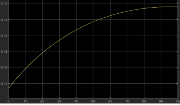
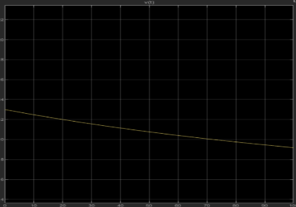
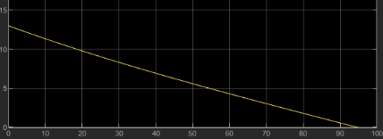

Cadillac LYRIQ
Coasting Profile
Predictive kinematic model for V2X brake-timing optimization using Simulink ODE integration.
Problem & Approach
V2X Brake Timing
The ECOCAR V2X challenge requires the vehicle to communicate with traffic infrastructure and predict when to lift off the accelerator so it arrives at a green light without braking. The precision of that prediction depends entirely on how accurately the model predicts the velocity-time profile during a coast.
I built a Simulink model that numerically integrates the governing equation of motion, capturing the nonlinear deceleration behavior driven by aerodynamic drag, rolling friction, and road gradient. The output is a velocity-time curve the V2X system uses to compute lift-off timing.
Mathematical Model
Governing Equation of Motion
Applying Newton's second law to the coasting vehicle with all resistive forces acting opposite to velocity:
Integrated numerically in Simulink at each timestep using the current velocity state
The drag term Cd(v) · v² is velocity-dependent, making this a nonlinear ODE that cannot be solved analytically. Simulink integrates dv/dt at each timestep, feeding the updated velocity back into the drag computation for the next step.
Cd(v) · v² — nonlinear, velocity-squared relationship. Dominant above ~45 mph. Cd was treated as velocity-dependent to capture compressibility effects at higher speeds.
μ · mg · cosθ — linear in normal force. Tire-road contact friction modeled with constant μ as a first-order approximation. Nonlinearity from deformation is a known limitation.
mg · sinθ — road grade term. θ derived from GPS elevation data. Adds or subtracts from deceleration depending on slope direction.
Simulink Validation
A two-stage protocol was used to isolate and validate each force term before running the full model.
Stage 01: Aerodynamic Drag Only
Rolling resistance and road grade were removed. This isolated the v² deceleration characteristic and allowed the drag coefficient Cd(v) to be tuned against the expected velocity decay shape before additional terms were introduced.

Acceleration Profile (Drag Only)

Velocity Decay (Drag Only)
Stage 02: Full System Model
Rolling friction and road gradient were reintroduced. The additional constant deceleration from rolling resistance is visible as an offset in the acceleration profile. Coefficient refinement was performed by comparing the Stage 01 and Stage 02 outputs and attributing the difference to the friction and grade terms.

Acceleration Profile (Full Model)

Velocity Profile (Full Model)
Key Findings
Isolating the drag term showed that aerodynamic resistance accounts for the majority of deceleration at highway speeds. Rolling resistance becomes the dominant term only at low speed.
The velocity-dependent drag term prevents a closed-form solution. The Simulink loop integrates dv/dt at each timestep with real-time force feedback, handling the nonlinearity correctly.
The velocity-time output gives the V2X system a predicted time-to-stop from any initial speed. This determines the latest point at which the driver can lift off and still arrive at a green light without braking.
Retrospective
Constant μ is a first-order approximation. Tire deformation and heat buildup under repeated braking events make friction load-dependent and temperature-dependent. A future model would implement a Pacejka tire model to capture this.
Coefficient tuning relied on expected behavior rather than measured data. Cross-referencing Simulink outputs against actual LYRIQ CAN bus velocity and acceleration data would allow direct, empirical tuning of Cd and μ.
The final model iteration was lost during development. All future simulation work is version-controlled in Git with tagged checkpoints at each validated stage.